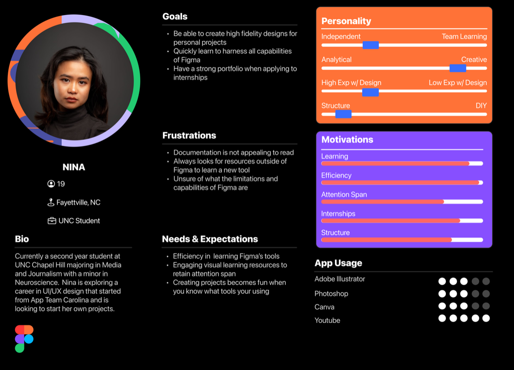
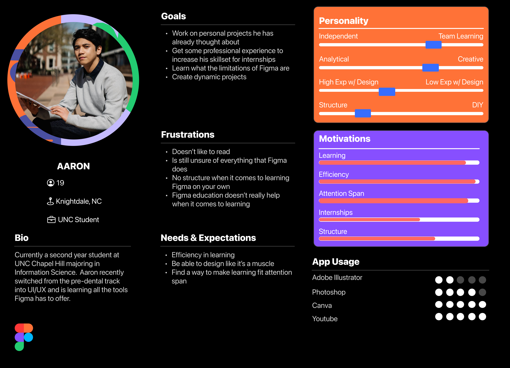
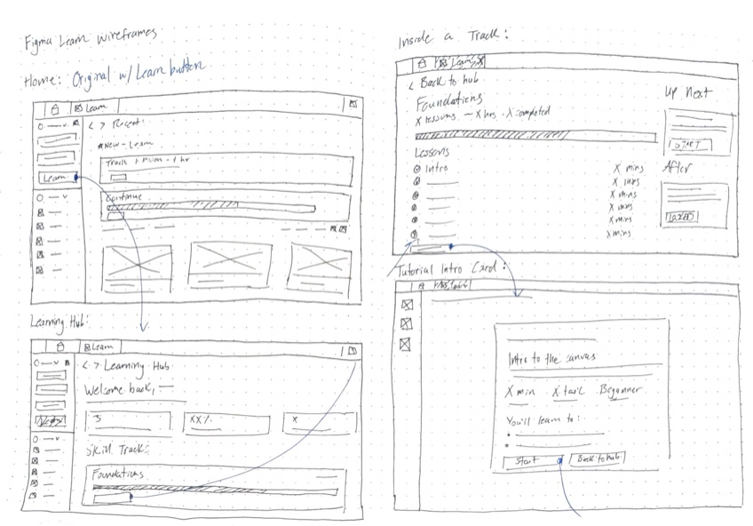
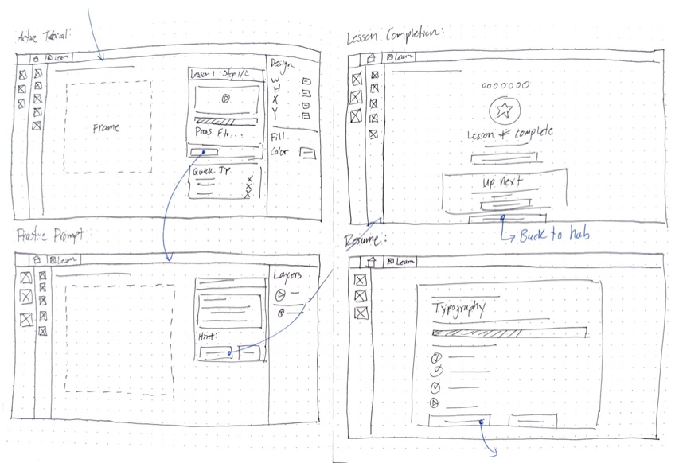
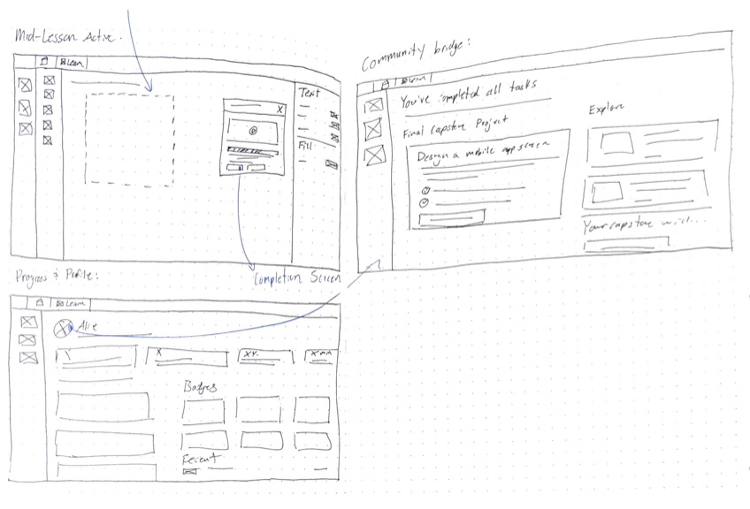
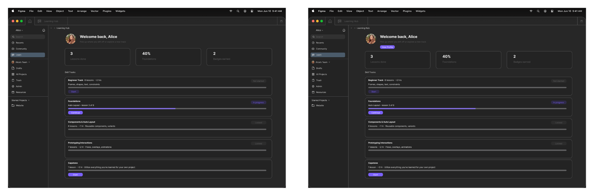

local
Figma Learn
An in-app onboarding and learning system, built inside the tool itself
swipe for role, timeline, tools, and impact
01Background & Problem
For MEJO 581, I ran a UX competitive analysis across six sites (including Stripe, Axios, and Are.na) built around a thesis: user-centered design and product-centered design produce genuinely different outcomes, not just different processes.
Figma Learn was the follow-through on my thesis. Figma’s own learning resources like docs, YouTube tutorials, and community files all live outside the tool, forcing beginners onto YouTube, Reddit, and third-party documentation just to understand the basics. I traced that gap through direct observation: App Team Carolina’s UI/UX Academy, Information Science and MEJO classrooms, Figma Community forums, r/figma, and the r/learndesign subreddits all showing the same pattern. Self-taught learners who couldn’t find a starting point inside the tool itself. “Knowing where to start... there are so many tools,” as one interviewee put it; another simply said, “I don’t know what I can do on Figma.” The idea I built toward is that the best place to learn a tool is inside the tool itself.
02Process
- Ran two in-depth interviews (Nina, a MEJO major exploring UX through App Team Carolina; Aaron, an Information Science major who switched from pre-dental to UX; and one AI-assisted composite interview to surface patterns across a broader self-taught-learner archetype, then built personas and a spectrum map across all three.
- Benchmarked against Duolingo (self-paced, gamified progression, but not contextual to a design tool), Codecademy (learn-by-doing, but a separate platform that still requires leaving Figma), and Figma’s own Community (has templates and resources, but no structured path, most users don’t know it exists or how to use it for learning).
- Designed the full skill-track architecture — Beginner Track through Foundations, Components & Auto Layout, Prototyping Interactions, and a Capstone — with locked/unlocked progression, a video-plus-live-canvas-practice lesson format, and a badge and profile system to make progress visible.
- Ran three usability testing sessions on the interactive prototype via UserTesting.com.
User Personas
Two real-world interviews were conducted on students who recently decided to commit themselves to the UX field and trying to gain professional experience for their portfolio. Through this, I was able to capture similarities in what pain points new users to Figma were experiencing which started to build my case for why Figma Learn was the solution to be made.


Low-Fidelity Mockups
Once I had the idea, I always like to diverge my ideas and sketch out anything that comes to mind before converging on a single system that will be carried throughout my prototype.



Iteration
Testing was consistently positive on the concept, one tester called the prototype "very rare" among quality design tools, but surfaced two concrete friction points. Testers repeatedly lost their way trying to find their progress and badges, so I added a persistent "View Profile" button directly in the Learning Hub instead of relying on sidebar navigation alone. Testers were also unsure whether they were meant to actively complete tasks or just click through the prototype, so I tightened the interaction wiring between the tutorial, practice, and completion screens so the path forward was never ambiguous.

Prototype
The final prototype was tested with real users on UserTesting.com to round out the designs and validate the full process of adding a feature into an existing app. This was a real test of skills and ideas rooted in what I love to do: teaching and mentoring others. It may not go into full production, but I think it's worth proposing as it would improve accessibility to Figma and give more creatives room to try new things.
03Results
The finished project shipped with full documentation and a LinkedIn post strategy aimed specifically at Figma employees, treating this less like a class assignment and more like a pitch.
The delivered prototype covers the full arc from onboarding to capstone: a Learning Hub with skill tracks and locked/unlocked states, step-by-step tutorials pairing video with live practice on the real canvas, lesson-completion screens with earned badges (Canvas Navigator, Frame Builder, Type Setter, Constraints Pro, Grid Wizard), a resume flow that picks users back up mid-lesson, a profile page tracking lessons done and time spent, and a capstone that bridges into the Figma Community. Across three usability testing sessions, feedback on the core premise was consistently positive, and both friction points that testing surfaced were resolved before the design was finalized.
04Reflection & Next Steps
Figma Learn is the one case study of the three that's purely conceptual rather than shipped. The real constraint here was designing entirely within Figma's own visual language and component system rather than from a blank canvas. Every screen had to look and behave like it already belonged in the product. Actually shipping this would take partnership with Figma's design and education teams, backend work to track real progress across sessions, and usability testing well beyond the three rounds I ran here.